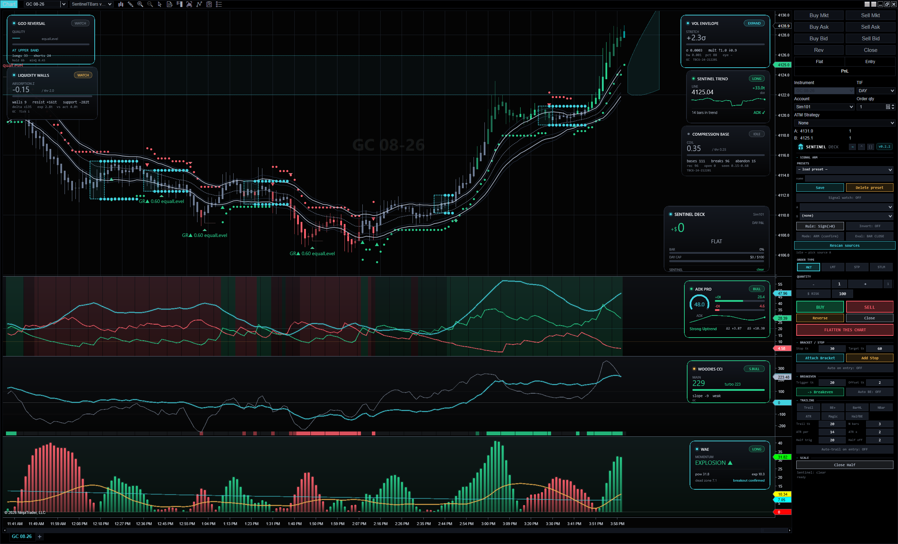
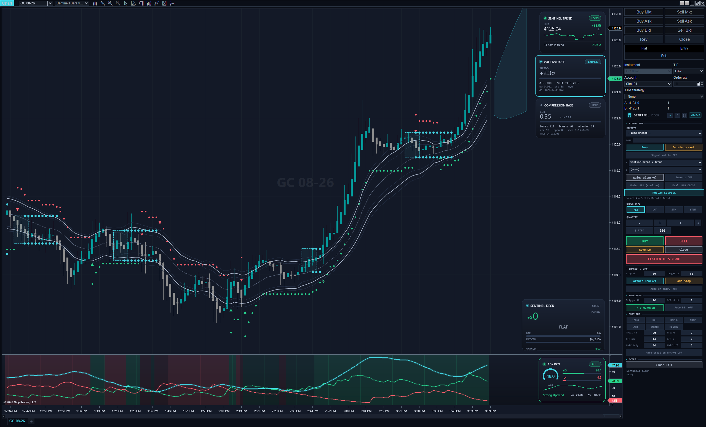
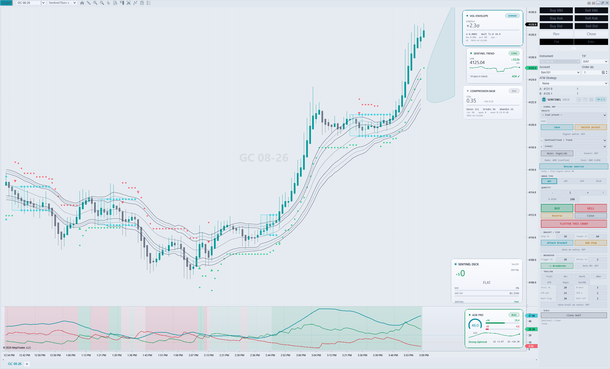
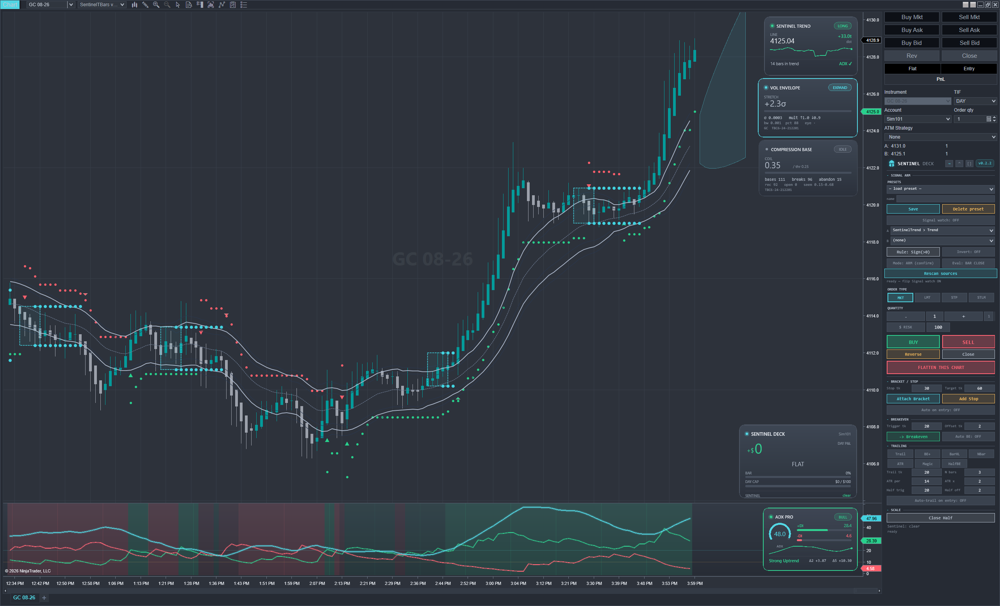
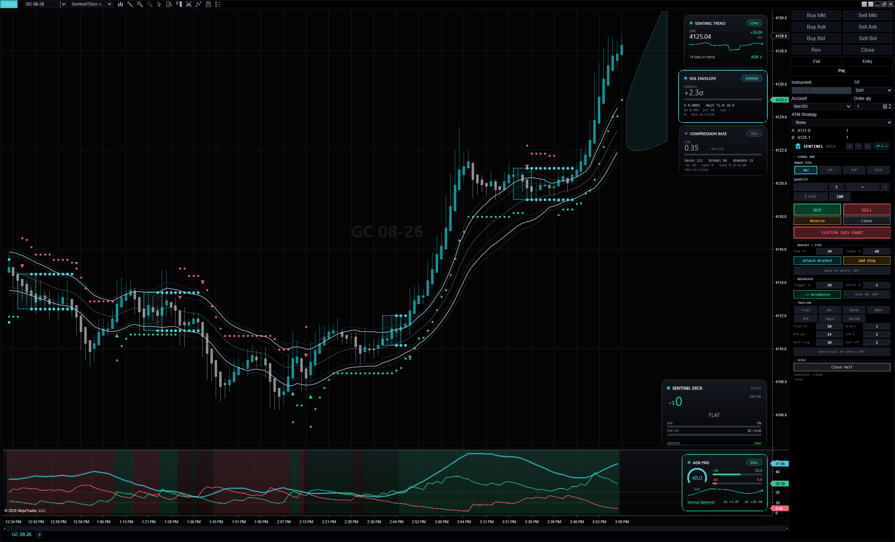
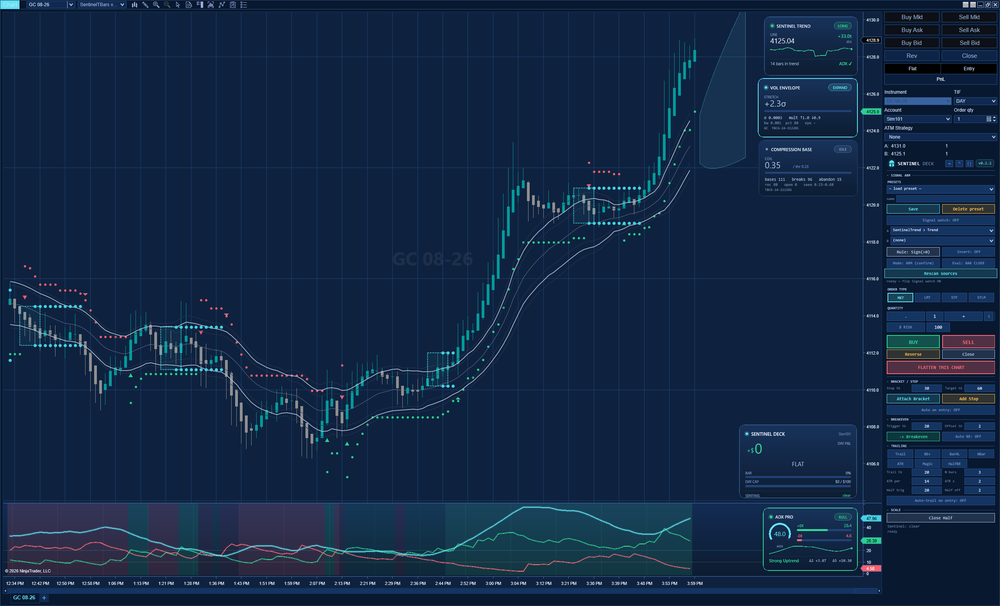
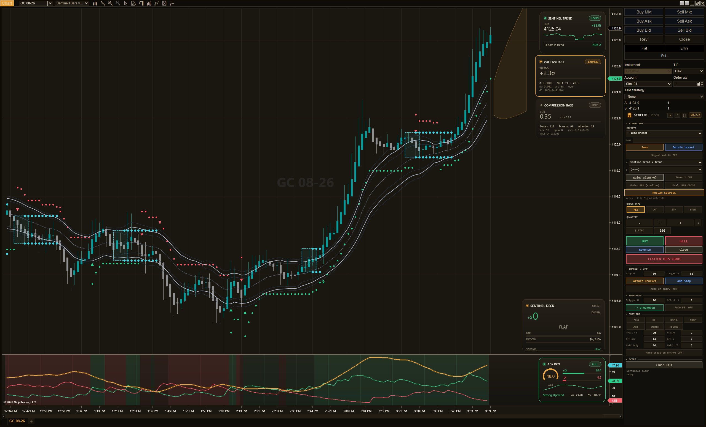
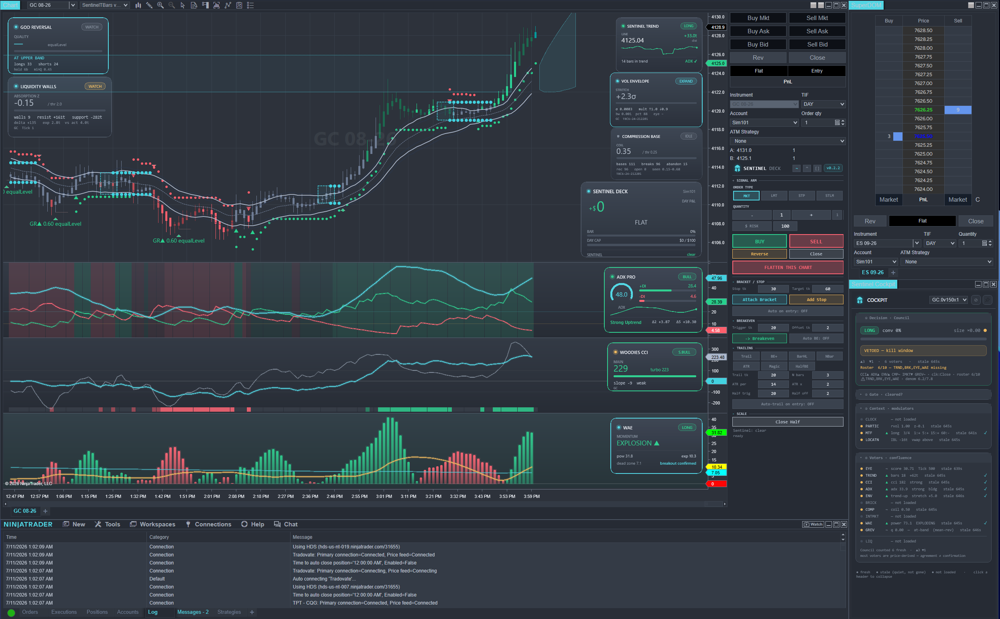
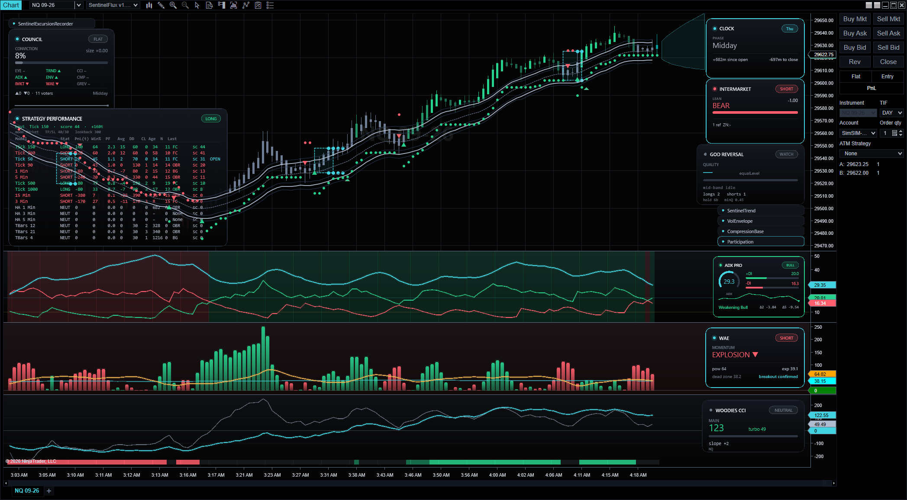
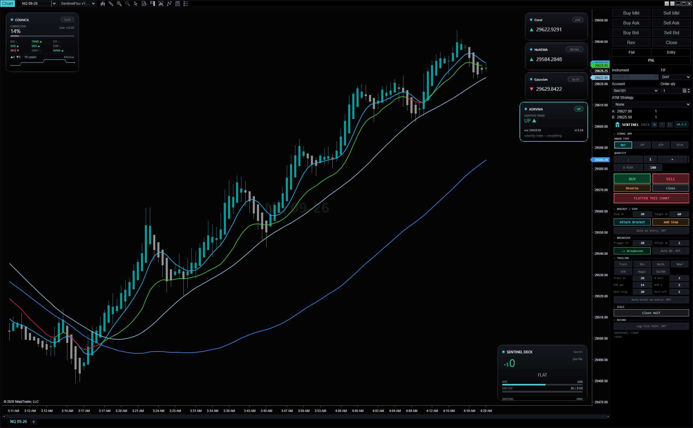

Sentinel is a suite of NinjaTrader 8 instruments — a design system that reskins your whole platform, and a family of sensors that read the tape. One switch recolors everything. Every tool stands alone. Free, forever, and yours to extend.

Aesthetics and intelligence are separable by design — the same publish/consult split that runs through the code. Take the beauty with none of the logic, or the logic on a plain chart. Your call.
A flight-deck design system that makes any NinjaTrader chart beautiful — glass HUD cards, seven cohesive themes, a theme-aware wallpaper. Needs zero intelligence. Flip one switch and the whole platform re-colors: charts, panels, chrome.
Trend, momentum, regime, compression, liquidity, order-flow — each a standalone indicator that publishes a clean state seam. Works with plain NT rendering. Needs zero skin. The one accent rule: cyan means live and watching.
Pick a look and the whole platform follows — charts, glass cards, panels, chrome, wallpaper. None of them are inverted from another; each is designed on its own ground.






Each carries the runtime it needs and installs into NinjaTrader's one assembly cleanly. Start with beauty, add sensors when you're ready.

The design system and platform skin. The widest, easiest entry — no intelligence required.

Eight hero signals plus a fleet of regime, structure and order-flow sensors — and three adaptive bar types.

A clean-room pack of every moving average and filter worth having, all rebuilt to the suite's card and color language.
Every rung stands alone and unlocks the next. Rungs 0–1 are live today. The rest are built and under active development — here's the whole map, so you can see where it goes.
No package manager, no build step. NinjaScript source drops straight into the platform. You bring NinjaTrader 8 — we ship no NT binaries.
Clone the repo and — if you use Claude Code — it auto-loads skills: packaged workflows that build Sentinel for you, enforcing the naming law, the glass-card render rules, and the license/provenance gate so a half-plumbed tool can never ship. Two are live today; the library grows with the suite.
Turn any raw NinjaTrader indicator into a compliant Sentinel sensor — named, carded, publishing a clean state seam, with its license checked first.
Add a whole new theme end-to-end — palette, glass cards, wallpaper, and the 16-file platform skin — in a single clean pass.
The skill library climbs the ladder with the suite — recorder wiring, Council voters, data-platform setup, and more.
Ship in .claude/skills/ · new to it? claude.com/claude-code